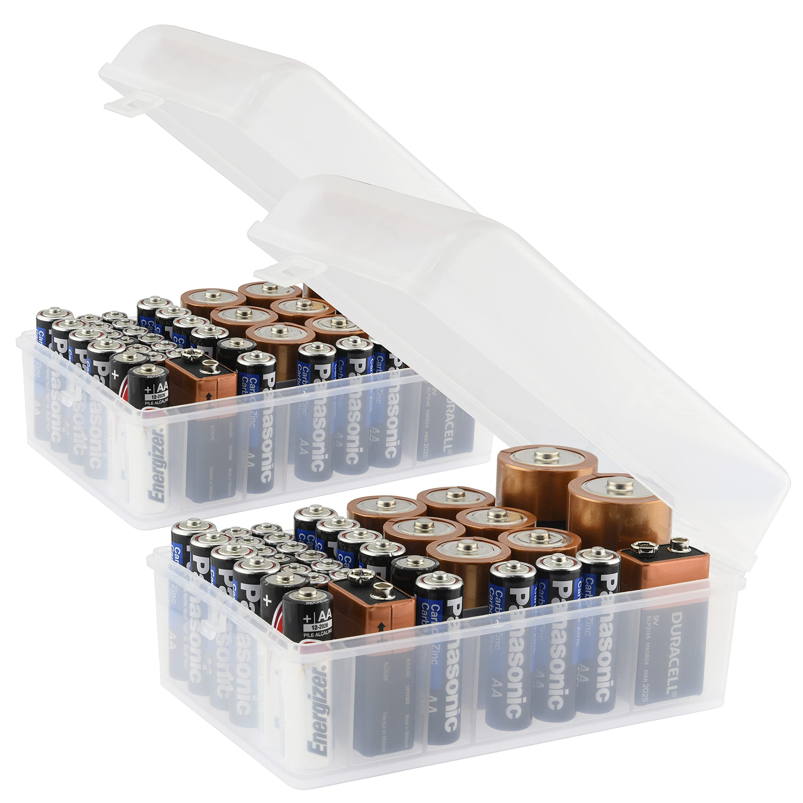
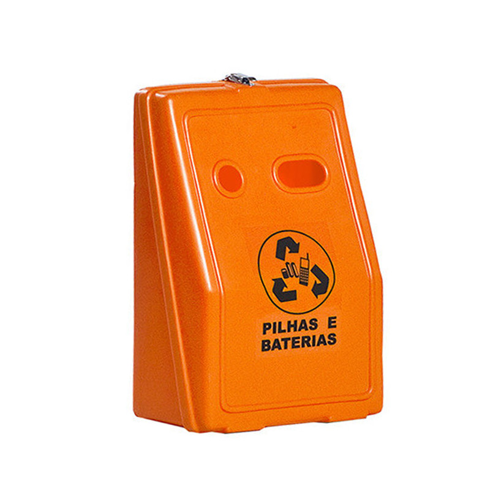
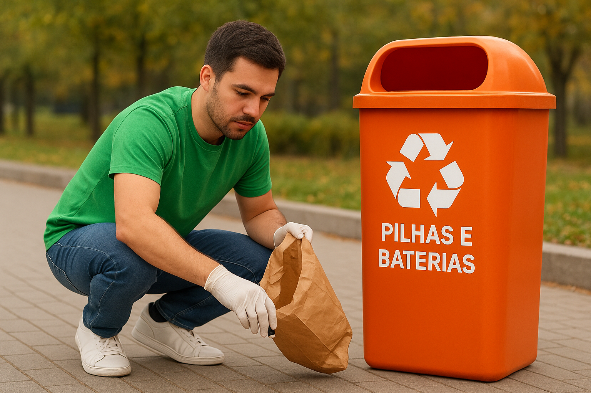
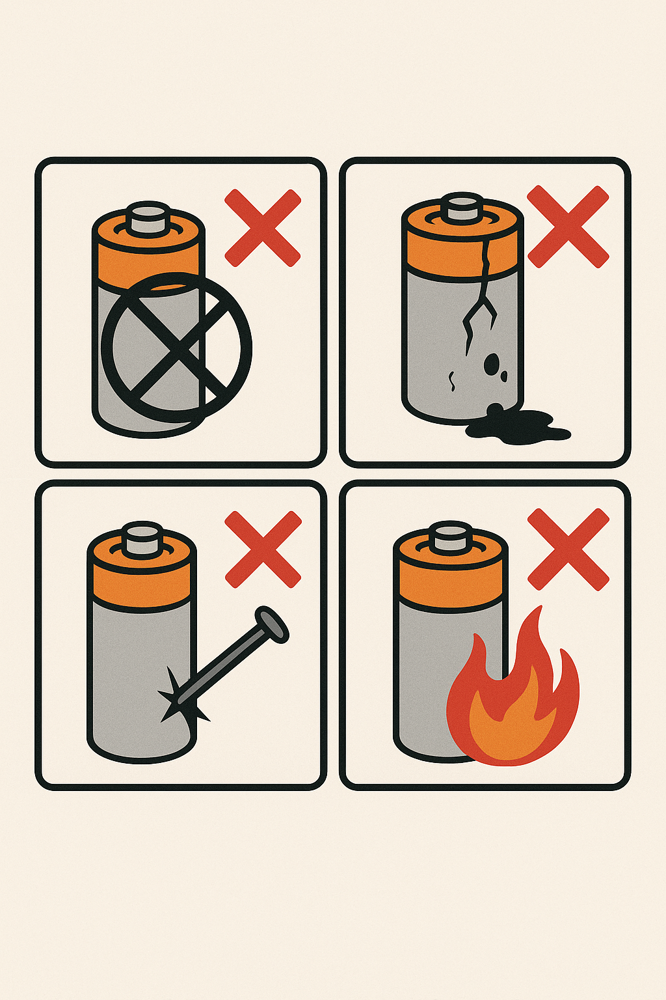
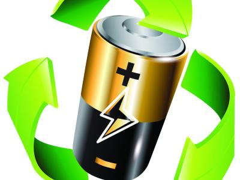

Guarde pilhas e baterias usadas em um recipiente plástico ou de vidro com tampa, evitando contato com outros resíduos.

Pilhas e baterias contêm metais pesados que podem contaminar o solo e a água.

Utilize os pontos de coleta oficiais disponíveis em sua cidade para entregar seus resíduos.

Não perfure, quebre ou exponha as pilhas e baterias ao fogo, pois isso pode causar vazamentos e riscos à saúde.

Consulte campanhas e programas de reciclagem em sua região para participar ativamente da logística reversa.